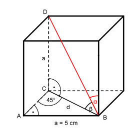

Aufgabe 57 Wie groß sind die Winkel α und β in dem Würfel?

Im gleichschenkligen und rechtwinkligen Dreieck ABC: α + β= 90° a sin 45° = --- |*d d d * sin 45° = a |:sin 45° a 5 cm d = --------- = ---------- = 7,1 cm sin 45 0,7071 Im Dreieck CBD: a 5 cm tan β = --- = ---------- = 0,7042 --> β = 35,2° d 7,1 cm α + β= 90° | -β α = 90° - β α = 90° - 35,2° = 54,8°